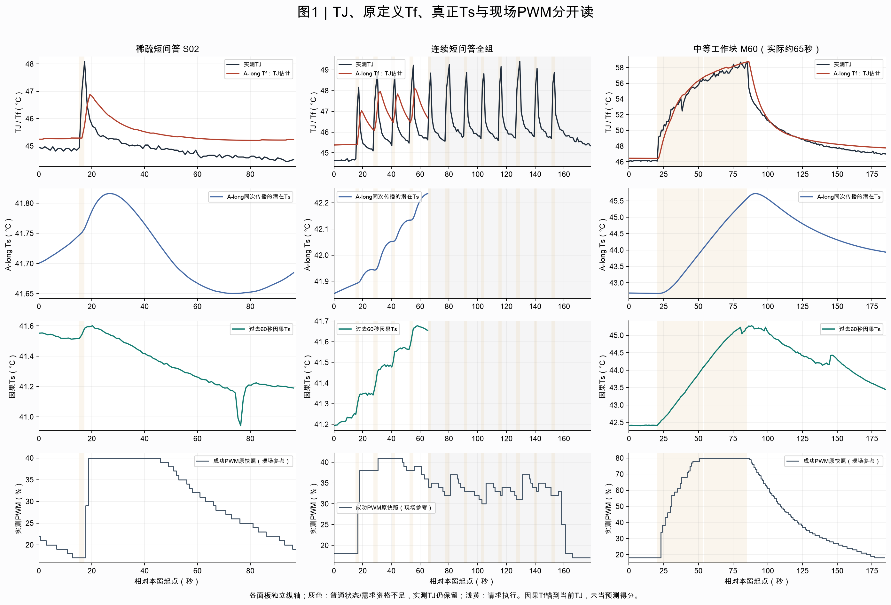
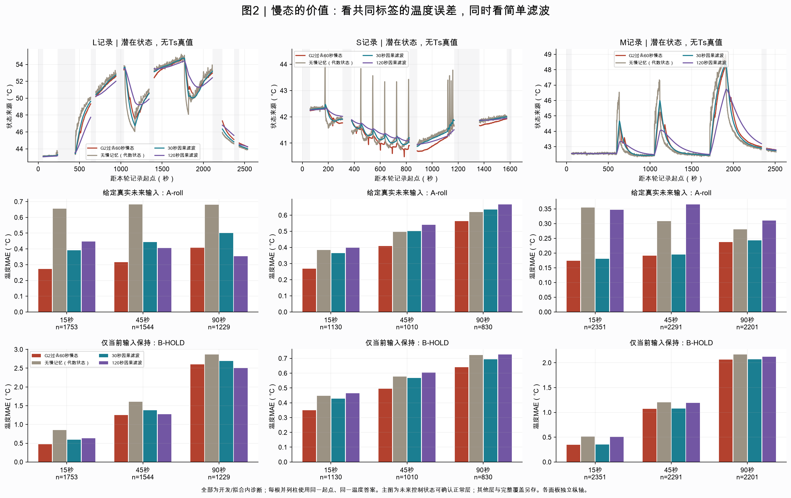
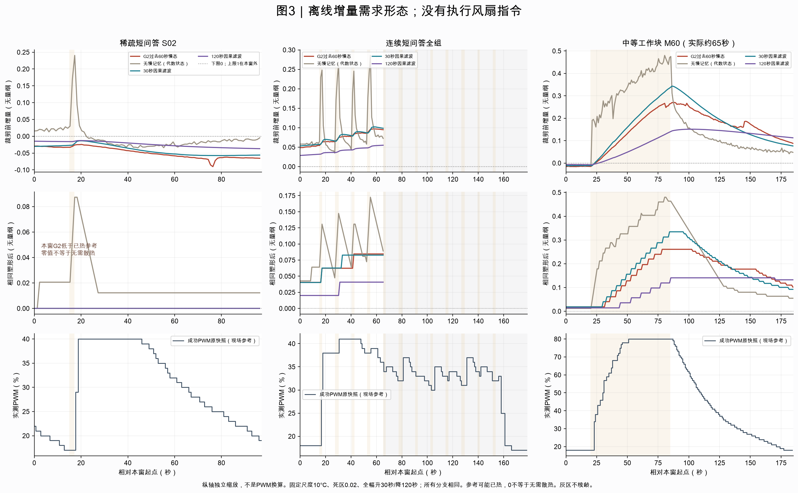
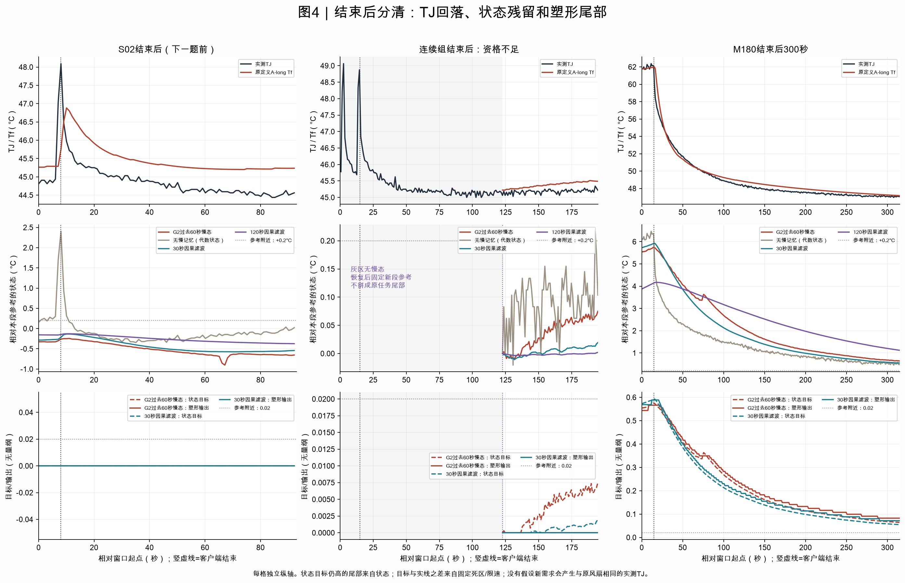

离线开发资料；固定模型，零次重新拟合。灰色表示普通状态/需求资格不足；真实TJ及原风险信息保留。点击图可打开矢量原图。

横轴是每个放大窗口内的秒数，纵轴分别是实测TJ/模型Tf、自由响应Ts、因果Ts的°C，以及另轴的实际成功PWM快照%。
主要看短TJ峰仍然存在、原Tf仍会欠峰，而真正Ts取自第二状态；连续组后半灰区明确断开，M工作块未重置。
不能把Tf欠峰改名成测准散热体，也不能把Ts或另轴PWM解释成新的安全风扇指令。

上排横轴为各轮经过的秒数、纵轴为四种潜在状态来源的°C；下两排横轴为15/45/90秒时距、纵轴为共同标签上的温度MAE。
主要看同一G2只换Ts后误差怎样改变：G2有增量信息，但M上30秒滤波接近；柱下n和灰区给出覆盖边界。
这些是可观测TJ的误差，不能读成Ts的准确率、独立留出验证、未来输入已知的现场预测，或控制收益。

横轴为窗口秒数，上排是未裁剪无量纲增量，中排是同一死区及限速后的需求指数，下排另轴保留现场PWM百分比。
主要看G2与30秒滤波都能减少短峰追随，持续M负载仍有升量；同时检查原始幅度、低于已热参考的负值和灰区，不把平直零线叫胜利。
更平稳不等于真实更安静或更安全，指数不能直接代入现有TJ—PWM曲线；本轮没有执行任何新风扇动作。

横轴是任务结束附近的秒数，竖虚线为客户端完成；三排分别显示TJ/Tf、相对本段参考的状态°C、无量纲状态目标与塑形输出。
主要看TJ可以先降而慢态仍高，以及状态目标和塑形输出之间额外尾部；连续组资格不足时保持灰区，恢复后新参考不接成原任务尾部或返回时间。
客户端结束不等于GPU内核结束，尾部更长不自动更好；这些图不能证明降低风量后的温度、安全或噪音效果。